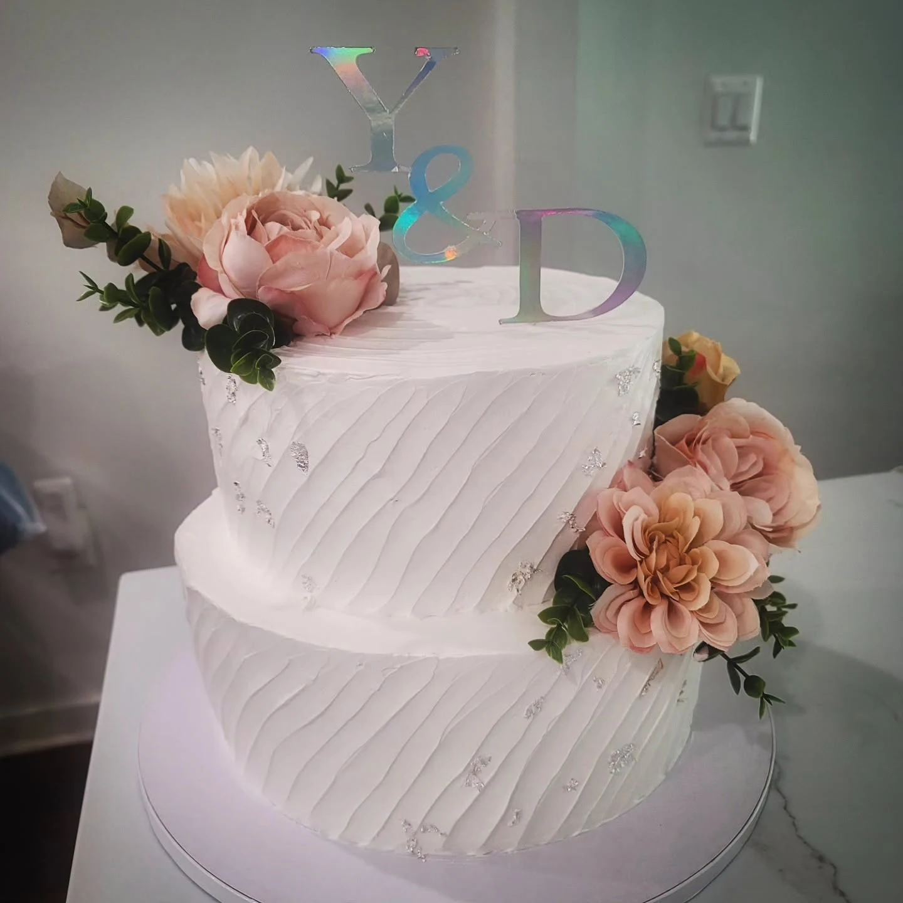
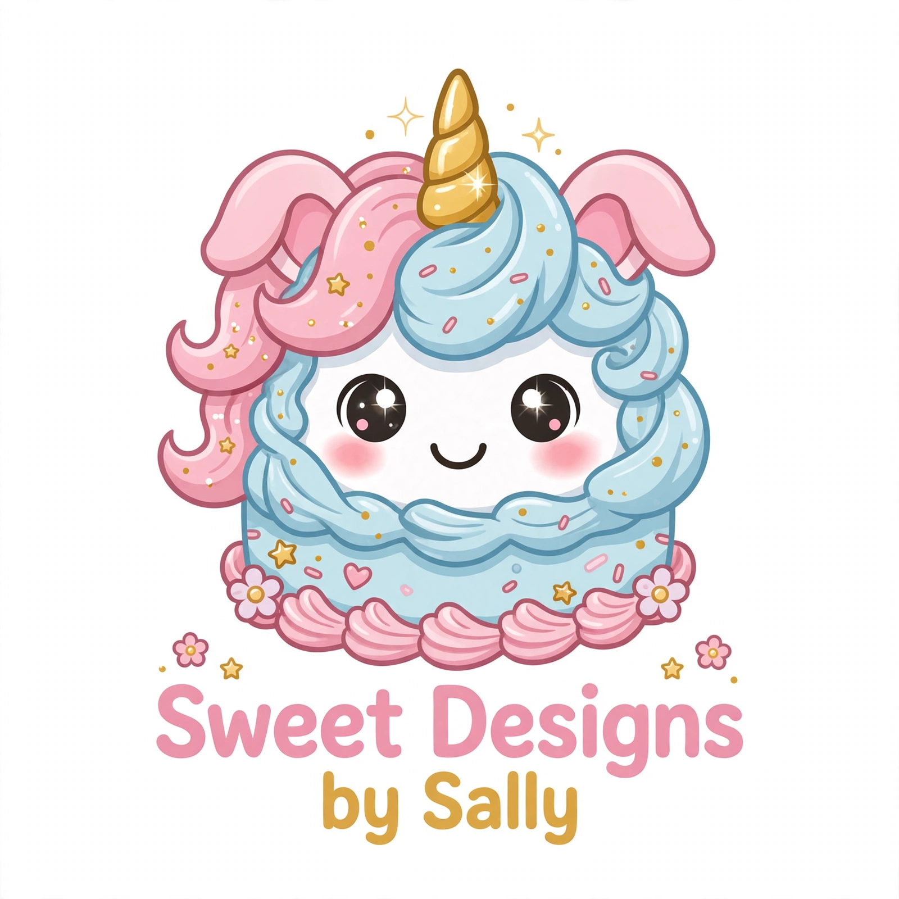
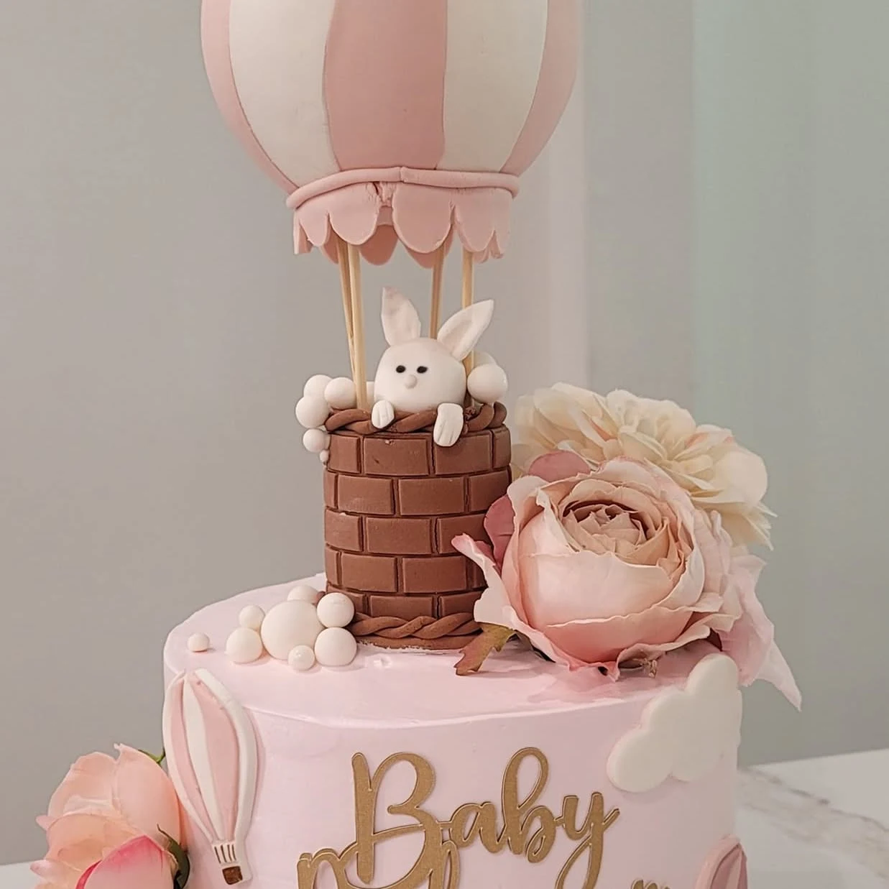
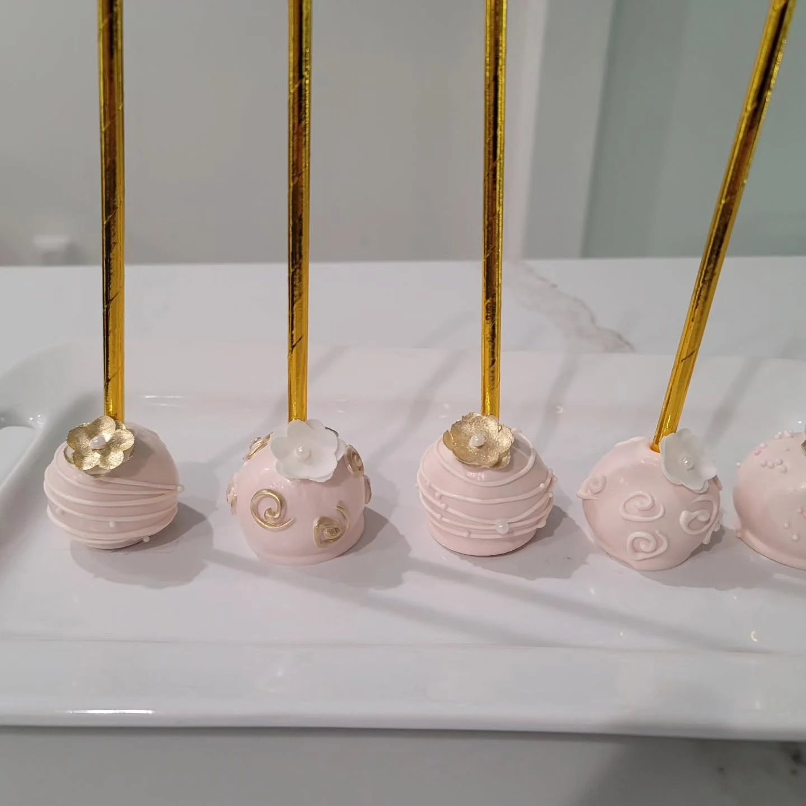
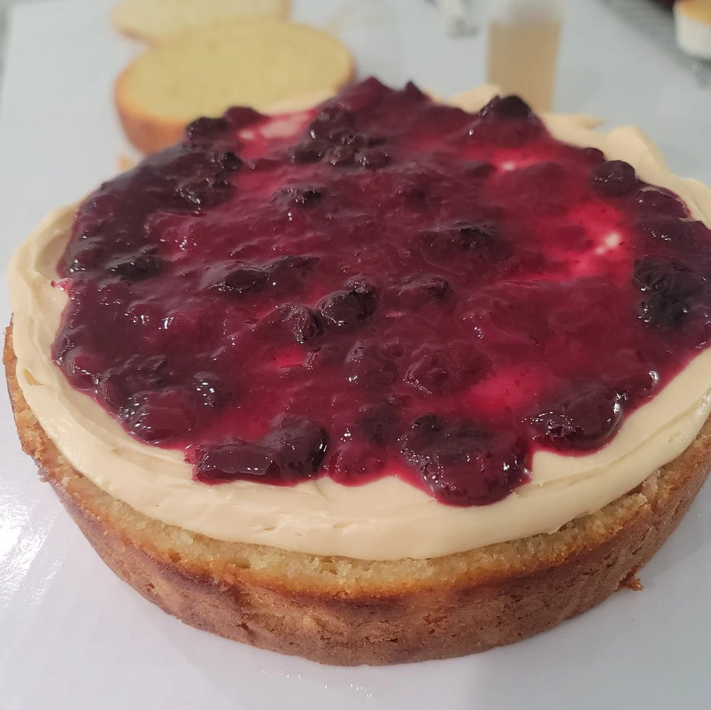
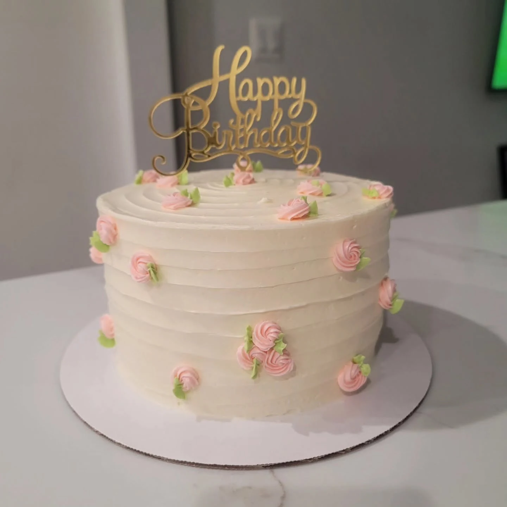

01 /
Pasteles decorados
Flores, colores y detalles que convierten un pastel en el centro de la celebración.
Ver creaciones
Sweet Designsby SallySWEET DESIGNS BY SALLY
Hay celebraciones que merecen algo tan especial como tú. Descubre un mundo de pasteles y pequeños detalles que enamoran a primera vista.
Un poquito de magia, mucho amor.

ALGO DULCE PARA CADA MOMENTO
Del pastel que se roba las miradas a los dulces que completan la mesa: conoce algunas de las creaciones de Sally.

Flores, colores y detalles que convierten un pastel en el centro de la celebración.
Ver creaciones

Sabores que invitan a disfrutar, como este cheesecake con arándanos.
Ver creaciones
HECHOS PARA RECORDAR
Es esa sonrisa al verlo por primera vez. Las velitas, las fotos, la ilusión. Un dulce puede ser parte de una historia muy especial: la tuya.
Explora los diseños de Sally y comparte la inspiración de tu próxima celebración.
Hablemos de tu ideaLA PARTE MÁS DULCE
Creaciones reales de Sweet Designs by Sally, compartidas en su página de Facebook.
Más en FacebookCada imagen es una creación de Sally. Encuentra más diseños e información en su Facebook.
TU PRÓXIMA CELEBRACIÓN EMPIEZA AQUÍ
Cuéntale a Sally tu idea, la fecha y los detalles que imaginas. Consulta sabores, disponibilidad y opciones directamente con ella.
Contactar a Sally en FacebookSe habla Español · English welcome